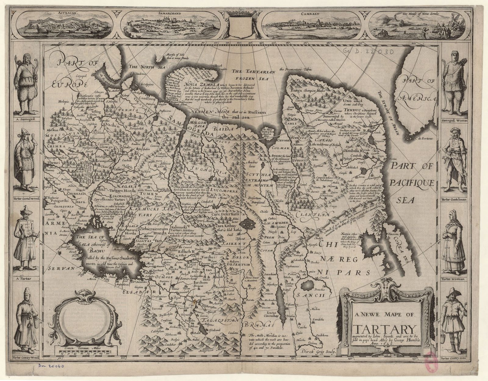

Machine transcription (Claude Opus 5.5, 29 Oct 2026), not yet reviewed by a specialist. The text is English: “Modern spelling” gives the same words in today's spelling. [?] marks an uncertain reading, [illegible] text hidden by stains.
John Speed's map of Tartary, dated 1626 on the plate and sold by George Humble in London. Four town views run along the top (Astrakhan, Samarkand, Cambalu and the house the Dutch built on Nova Zembla), eight costume figures stand down the sides, and 26 notes on the map range from the Dutch voyages to the Great Wall, Pliny's people who live on smells, and asbestos. Every text on it was read from the scan by an AI model, Claude Opus 5.5, as engraved and in modern spelling. Three of the longest notes were checked word for word against the scan and match, including the engraver's own slips, which the model kept and flagged. The model also read 411 smaller place names; they are not pinned yet. Turn the sheet over for Speed's “Description of the Kingdome of Tartary” (pp. 39–40), 3,236 words in 16 paragraphs. Twenty lines checked against the scan had no errors; a brown stain hides a few words in paragraphs 3 and 8.
A. NEWE. MAPE OF. TARTARY
A New Map of Tartary
Show on the mapaugmented by. Iohn . Speede. and are to be sold in pops head Alley by George Humble. Anno. 1626.
augmented by John Speed, and are to be sold in Pope's Head Alley by George Humble. In the year 1626.
Show on the mapDirck Grÿp Sculpsit
Dirck Grijp engraved [it]
Show on the mapComon German Miles 15 30 45 60 75 90 105 120
Common German Miles 15 30 45 60 75 90 105 120
Show on the mapASTRACAN
Astracan
Show on the mapSAMARCHAND
Samarchand
Show on the mapCAMBALU
Cambalu
Show on the mapTHe House of Nova Zemla
The House of Nova Zemla
Show on the mapA, Samoged
A Samoyed
Show on the mapTartar Gentelwoman
Tartar Gentlewoman
Show on the mapA Tartar
Show on the mapTartar Contry Woman
Tartar Country Woman
Show on the mapSamoged Woman
Samoyed Woman
Show on the mapTartar Gentelman
Tartar Gentleman
Show on the mapTartar woman
Show on the mapTartar Contry man
Tartar Country man
Show on the mapNOUA ZEMBLA which began to bee discovered for the Estates of Netherland by William Barentson Hollander and Others in the yeares 1594. 95. 96. But whither Nova Zembla that is to Say New land, bee on the east Side a continent orno is yet uncertein. thongh there bee that vnaduisedly say that the most northerly part therlof is the Promontory Tabin where of pliny Speaketh
Nova Zembla, which began to be discovered for the Estates of Netherland by William Barentson, Hollander, and others in the years 1594, 95, 96. But whether Nova Zembla, that is to say New Land, be on the east side a continent or no is yet uncertain, though there be that unadvisedly say that the most northerly part thereof is the Promontory Tabin, whereof Pliny speaketh.
Show on the mapMartsin af Isle that is many Ilands[?]
Martsin af Isle, that is, many islands
Show on the mapthe Grauwick[?] Gulf als the white Sea
the Grauwick Gulf, also the White Sea
Show on the mapBiatlaozara Castle whither intrine[?] of warre the Moscovite bringeth his Treasure tobee kept.
Biatlaozara Castle, whither in time (?) of war the Muscovite bringeth his treasure to be kept.
Show on the mapThe River Tanais now called Don which divideth Asia from Europa and hath great plenty of fish
The River Tanais, now called Don, which divideth Asia from Europa and hath great plenty of fish.
Show on the mapAstracan so called by reason of a, very rich town of the Same name, Subdued by Basilius the great Duke of Moscow in the yeare 1494.
Astracan, so called by reason of a very rich town of the same name, subdued by Basilius the Great Duke of Moscow in the year 1494.
Show on the mapTHE SEA OF SALA otherwise of BACHU called by the Russians Chualenske more, in old time the Caspian and Hircan Sea
The Sea of Sala, otherwise of Bachu, called by the Russians Chualenske More; in old time the Caspian and Hircan Sea.
Show on the mapPliny placeth the Perosites herewhom hee saith to bee so narrow mouthed that they live[?] only by the Smel of rost meat beleeveit ngt[?]
Pliny placeth the Perosites here, whom he saith to be so narrow-mouthed that they live only by the smell of roast meat. Believe it not.
Show on the mapGrustina a City of great traffigue where the Tartars and Russians meet
Grustina, a city of great traffic, where the Tartars and Russians meet.
Show on the mapKalmucki Tartari Idololatræ non rasi nt[?] reliqui[?] ideoque Kalmucki id est criniti vocantur
The Kalmuck Tartars, idolaters, not shaven like the rest [reading 'ut reliqui'], and therefore called Kalmucks, that is, long-haired.
Show on the mapNIAREN MORE that is in Russiam the stil sea
Niaren More, that is in Russian the still sea
Show on the mapThe Iland Tazata is here placed in pliny.
The island Tazata is here placed in Pliny.
Show on the mapANNIBI the land of the Nainaves as Iohn planocarpini Saith
Annibi, the land of the Nainaves, as John Planocarpini saith.
Show on the mapIn the wildernes of Lop and Belgian they say are heard terrible noises and seen marveilons[?] apparitions of evil spirits where by many are mislead
In the wilderness of Lop and Belgian, they say, are heard terrible noises and seen marvellous apparitions of evil spirits, whereby many are misled.
Show on the mapCara Kithay that is blak kathay
Cara Kithay, that is, Black Cathay
Show on the mapStone tower a Mountein
Stone Tower, a mountain
Show on the mapUNG which Some cal Gog
Ung, which some call Gog
Show on the mapSumongul by Mercator called MAGOG
Sumongul, by Mercator called Magog
Show on the mapTENDUC a Kingdome where Christians reigned in the yeare 1290
Tenduc, a kingdom where Christians reigned in the year 1290
Show on the mapMount Alchai where the Sepulcres are of the Kinges of Tartary
Mount Alchai, where the sepulchres are of the kings of Tartary
Show on the mapUnchiam[?] a castle against the irruptions of the Tartars
Unchiam, a castle against the irruptions of the Tartars
Show on the mapCampion where the Inhabitants
Campion, where the inhabitants
Show on the mapIn this Country is a Hil out of which they dig earth called by pliny terra asbestus, having fine veines like grasse which being Spun and weavedyeeeld cloth that wil nut burn in the fire
In this country is a hill out of which they dig earth called by Pliny terra asbestus, having fine veins like grass, which being spun and weaved yield cloth that will not burn in the fire.
Show on the mapA wall of 400 leages, built between the bottoms of the mounteins by the King of China, against the incursions of the Tartars
A wall of 400 leagues, built between the bottoms of the mountains by the King of China, against the incursions of the Tartars.
Show on the mapXuntien otherwise Quinsay, that is Heaventown[?] where the King of China hath his King ly Seat
Xuntien, otherwise Quinsay, that is Heaven-town, where the King of China hath his kingly seat.
Show on the mapThe Midle Meridian is 120 ; vnto which the rest are bended according to the proportion of 40. and 70 Parallels.
The middle meridian is 120, unto which the rest are bended according to the proportion of the 40 and 70 parallels.
Show on the maptop: 40-200 by 10; bottom: 90-150 by 10; left: 50, 40, 30; right: 50, 40, 30
Graduation of the map border: longitudes 40 to 200 along the top, 90 to 150 along the bottom; latitudes 50, 40, 30 on both sides.
Show on the mapSCYTHARVM gens semper antiquissima. It was a judged case (long since) betwixt the Ægyptian and Inhabitant of this Countrey. Yet were not the Scythians the first, which possest it : At least it was the first name by which they were knowne. For, before the entrance of Scythes the supposed sonne of Hercules, we find here a people which derive their pedegree from Magog, the son of Iapheth, and were called Magogins in remembrance of their antique founder. To this purpose Iunius and other learned interpret terram Magogin in the 38. of Ezekiel 2. and Revelation 20. 8. and so in sundry places else-where of divine Scripture, take it for other land, then that, which was after profane Writers, called Scythia, and Sarmatia, and now Tartaria ; though perhaps these have not all had still the same bounds, from the beginning ; for what any one Kingdome upon the earth hath ? All states have had their course to rise and fall, to be impaired or inlarged, at pleasure of the most High, who disposeth of Empires as seemes best in his wisdome.
Scytharum gens semper antiquissima. It was a judged case (long since) betwixt the Egyptian and inhabitant of this country. Yet were not the Scythians the first, which possessed it: at least it was the first name by which they were known. For, before the entrance of Scythes the supposed son of Hercules, we find here a people which derive their pedigree from Magog, the son of Japheth, and were called Magogins in remembrance of their antique founder. To this purpose Junius and other learned interpret terram Magogin in the 38th of Ezekiel, 2, and Revelation 20:8, and so in sundry places elsewhere of divine Scripture, take it for other land, than that, which was after profane writers, called Scythia, and Sarmatia, and now Tartaria; though perhaps these have not all had still the same bounds, from the beginning; for what any one kingdom upon the earth hath? All states have had their course to rise and fall, to be impaired or enlarged, at pleasure of the Most High, who disposeth of empires as seems best in his wisdom.
Show on the map(2) Of the Magogins, we have not much story; yet they have left their name behind them, which is now corrupted into Maugol[?], as most imagine. While the Scythæ[?] bare rule, they infested their neighbours without mercy or equitie : and practised their rapines, as farre almost, as they could find a subject to work on. In so much that they gave name to all the rude and inhumane Nations, both of Asia and Europe, North of Danubius : which for their crueltie were much feared, and for brutish Customes growne odious to the more civill parts of the world.
(2) Of the Magogins, we have not much story; yet they have left their name behind them, which is now corrupted into Maugol, as most imagine. While the Scythae bare rule, they infested their neighbours without mercy or equity: and practised their rapines, as far almost, as they could find a subject to work on. Insomuch that they gave name to all the rude and inhuman nations, both of Asia and Europe, north of Danubius: which for their cruelty were much feared, and for brutish customs grown odious to the more civil parts of the world.
Show on the map(3) Tollite Barbarûm mōres[?] ; was meant of these by the Poet, and well it might. For who could be more barbarous then the Essedons, which lived here by the Palus Mæotis[?], and as (Herodotus in his fourth Booke of Histories delivers) were wont to sing their Parents to the grave, invite their best friends, to feast with their fathers flesh, and use his scull, as a Cup to drinke in, at their lascivious banquets. Who more then the Axiacæ[?] ? who quenched their thirst with the bloud of him, whom they first slew, as it gushed warme from his wounds. W[illegible]e foolish proud then the Agathyrsi ? Who, as G[illegible] come short in their making up, were us[illegible]de by a deformed painting , and ugly stain[illegible] ly colours. Our Picts are supposed[?] by [illegible] to have had he[illegible] their originall.
(3) “Tollite barbarum mores” was meant of these by the poet, and well it might. For who could be more barbarous than the Essedons, which lived here by the Palus Maeotis, and as (Herodotus in his fourth book of Histories delivers) were wont to sing their parents to the grave, invite their best friends, to feast with their fathers' flesh, and use his skull, as a cup to drink in, at their lascivious banquets. Who more than the Axiacae? who quenched their thirst with the blood of him, whom they first slew, as it gushed warm from his wounds. W[illegible]e foolish proud than the Agathyrsi? Who, as G[illegible] come short in their making up, were us[illegible]de by a deformed painting, and ugly stain[illegible] ly colours. Our Picts are supposed by [illegible] to have had he[illegible] their original.
Show on the map(4) It were too much to recite here the other scattered Nations, which over-spread the earth : for she was, as most style her, the officina generis humani : and sent forth swarmes of her brood, which soone fastned themselves, where ever they set footing. For they were strong of body, bold and heady, beyond the rule of valour : distinguisht not right from wrong in their quarrels, but reckoned justly their owne, what ever they could claspe by force of Armes. And this they all practised almost without difference of sex, unlesse in this, that their women were most warlike : witnesse that incomparable story of Tomyris, who cut off the Persian Cyrus and 200000,[?] more of his souldiers at one encounter, and cast his head into a cauldron of blood, with this upbraide, for the slaughter of her sonne Pergapises : Satiate sanguine, quem sitisti. Nor was she the single one, that put off the weaknesse of her sex to take Armes. For here lived those professed Amazons, which admitted no man into their Campes, but at set times of necessitie, to preserve their race : yet were they a terror to the world, vext a great part of Asia the lesse, and built the renowned Ephesus, Smyrna, Cuma, Magnesia, et cetera.
(4) It were too much to recite here the other scattered nations, which overspread the earth: for she was, as most style her, the officina generis humani: and sent forth swarms of her brood, which soon fastened themselves, wherever they set footing. For they were strong of body, bold and heady, beyond the rule of valour: distinguished not right from wrong in their quarrels, but reckoned justly their own, whatever they could clasp by force of arms. And this they all practised almost without difference of sex, unless in this, that their women were most warlike: witness that incomparable story of Tomyris, who cut off the Persian Cyrus and 200,000 more of his soldiers at one encounter, and cast his head into a cauldron of blood, with this upbraid, for the slaughter of her son Pergapises: Satiate sanguine, quem sitisti. Nor was she the single one, that put off the weakness of her sex to take arms. For here lived those professed Amazons, which admitted no man into their camps, but at set times of necessity, to preserve their race: yet were they a terror to the world, vexed a great part of Asia the less, and built the renowned Ephesus, Smyrna, Cuma, Magnesia, etc.
Show on the map(5) These had their time. The Gothes or Getæ[?] succeeded, and were inheritors as well of their mischievous customes, as ill-got possessions : for which they purchased them the name of Polonei, among their neighbours, theeves and destroyers : such as were no lesse grievous to them then their predecessours. Doubtlesse a curse of perpetuall tyranny lies upon their wicked Empire. For when next the Tartars came on, the state it selfe was not much bettered, nor the innocent which lay neere any whit more secured.
(5) These had their time. The Goths or Getae succeeded, and were inheritors as well of their mischievous customs, as ill-got possessions: for which they purchased them the name of Polonei, among their neighbours, thieves and destroyers: such as were no less grievous to them than their predecessors. Doubtless a curse of perpetual tyranny lies upon their wicked empire. For when next the Tartars came on, the state itself was not much bettered, nor the innocent which lay near any whit more secured.
Show on the map(6) These last have beene supposed to be the remnant of those ten Tribes which were led captive by Salmanassar. How likely the reasons are I will not dispute. But surely, if so, they must have retained some knowledge of the true God, at least some precepts of civilitie from their fore-fathers, though never so long since. For what people can we reade of in stories, which have at any time beene inlightned with the truth, and yet afterward fallen into that grosse barbarisme, which is now found among the Tartarians ? See their Character, which (as they are by most described) deales impartially ; gives them ill fashioned bodies, answerable to their rude minds, fit houses for so unclean guests.
(6) These last have been supposed to be the remnant of those ten tribes which were led captive by Salmanassar. How likely the reasons are I will not dispute. But surely, if so, they must have retained some knowledge of the true God, at least some precepts of civility from their forefathers, though never so long since. For what people can we read of in stories, which have at any time been enlightened with the truth, and yet afterward fallen into that gross barbarism, which is now found among the Tartarians? See their character, which (as they are by most described) deals impartially; gives them ill-fashioned bodies, answerable to their rude minds, fit houses for so unclean guests.
Show on the map(7) Their stature is different. The most part have large shoulders, a broad face, with a crooked nose, deformed countenance, swarty colour, hollow eyes, hairy and untrimmed beard, and head close shaved. Their speech is boystrous, and clamorous : their noyse, in singing, like the yell of Wolves; and endurance of hunger, thirst, heat, cold, and watching equalls them, ( in strength of body ) to the most able beast, for it exceeds the common power of a man. Their lust is without Law. For they except no kindred, but their owne mothers, daughters, and sisters : No Species, for they mixe with beasts ; No sex, for they are insatiate Sodomites : and yet take liberty for as many wives, as the can maintaine ; which (contrary to our civill courses) they buy of their Parents, in stead of receiving dowries. Their meate is the raw flesh of horses without regard how they were killed, or of what diseases they died : sometimes they suck bloud from the living, to appease their hunger and thirst, if (in a journey) they be distressed for want of food.
(7) Their stature is different. The most part have large shoulders, a broad face, with a crooked nose, deformed countenance, swarthy colour, hollow eyes, hairy and untrimmed beard, and head close shaved. Their speech is boisterous, and clamorous: their noise, in singing, like the yell of wolves; and endurance of hunger, thirst, heat, cold, and watching equals them, (in strength of body) to the most able beast, for it exceeds the common power of a man. Their lust is without law. For they except no kindred, but their own mothers, daughters, and sisters: no species, for they mix with beasts; no sex, for they are insatiate sodomites: and yet take liberty for as many wives, as they can maintain; which (contrary to our civil courses) they buy of their parents, instead of receiving dowries. Their meat is the raw flesh of horses without regard how they were killed, or of what diseases they died: sometimes they suck blood from the living, to appease their hunger and thirst, if (in a journey) they be distressed for want of food.
Show on the map(8) Cities they have but few, nor houses, other then moveable tents, made of beasts skinnes, which they pitch up by great multitudes, in the forme of a towne, and those are called hordes : when the grasse is once eaten bare, and the ground yeelds not meate for their Cattle, they trudge with bagge and baggage to ar[illegible] quarter : and so in course they wander through the vast [illegible] unsettled[?], and indeed impatient to be settled, or rather [illegible] (as they take it) within any one bounded compasse, [illegible]e wide world to roame in. Their chiefe Armes are Bow and Arrowes, which they use most on horse-backe, for their more speedy flight : and have them commonly strongly poysoned, for the more sure mischiefe to the foe. Their stratagems are down-right fraud, and breach of truth ; for they keepe no faith with an enemie, regard not any compact made upon termes of peace ; but follow their owne sense, and commit what outrages they can with least danger to themselves.
(8) Cities they have but few, nor houses, other than moveable tents, made of beasts' skins, which they pitch up by great multitudes, in the form of a town, and those are called hordes: when the grass is once eaten bare, and the ground yields not meat for their cattle, they trudge with bag and baggage to ar[illegible] quarter: and so in course they wander through the vast [illegible] unsettled, and indeed impatient to be settled, or rather [illegible] (as they take it) within any one bounded compass, [illegible]e wide world to roam in. Their chief arms are bow and arrows, which they use most on horseback, for their more speedy flight: and have them commonly strongly poisoned, for the more sure mischief to the foe. Their stratagems are downright fraud, and breach of truth; for they keep no faith with an enemy, regard not any compact made upon terms of peace; but follow their own sense, and commit what outrages they can with least danger to themselves.
Show on the map(9) Their Religion is answerable to their vile customes : Some are Pagans, others Mahumetanes[?], yet will not be called Turks but Bersemanni, and their chiefe Priest Seyd, whom they reverence more then their Maker ; and admit that none should touch his hand, but their Kings, and these too with an humble gesture : their Dukes aspire not above his knee, nor their Nobles higher then his feete : the rest are happy, if they can but reach at his garment, his horse, his any-thing, so simple are they in their superstition : and thus have they continued either Atheists or false Idolaters, ever since their first entrance upon this Kingdome in the yeare 1187. Before, they were not esteemed a Nation at all, but wilde people, without law or reason almost, who lived in the open fields, and conversed with no other then their own Heards of Cattle.
(9) Their religion is answerable to their vile customs: some are pagans, others Mahometans, yet will not be called Turks but Bersemanni, and their chief priest Seyd, whom they reverence more than their Maker; and admit that none should touch his hand, but their kings, and these too with an humble gesture: their dukes aspire not above his knee, nor their nobles higher than his feet: the rest are happy, if they can but reach at his garment, his horse, his anything, so simple are they in their superstition: and thus have they continued either atheists or false idolaters, ever since their first entrance upon this kingdom in the year 1187. Before, they were not esteemed a nation at all, but wild people, without law or reason almost, who lived in the open fields, and conversed with no other than their own herds of cattle.
Show on the map(10) Their first King was one Chinchis, a man of low birth but high spirit, impatient of that slavish condition to which he was bred : he brake forth at last, and drew more by his example, into the thoughts of better fortunes : which he ceased not to prosecute, till he had made good his purpose, and not onely [40 THE DESCRIPTION OF THE KINGDOME OF Tartary.] settled himselfe in the throne, but inlarged the dominion of the Tartars, through a great part of Asia and Europe, which had scarce before heard of any such people. His first forces he imployed upon Tenduch and Argon, bounded with the Easterne Seas, both of them were then Provinces governed by Vncham, or Presbyter Iohn. Soone after they got ground in Sarmatia Asiatica, followed their blow upon[?] Russia, Hungaria, and Polonia ; fetcht in the Kingdomes of China, Mein, and Bengala, and left many out-reaches to their successours, which have not kept intire to this day, as being not able to match so many potent adversaries, as they have from every quarter of their Kingdome.
(10) Their first king was one Chinchis, a man of low birth but high spirit, impatient of that slavish condition to which he was bred: he brake forth at last, and drew more by his example, into the thoughts of better fortunes: which he ceased not to prosecute, till he had made good his purpose, and not only [40 The Description of the Kingdom of Tartary.] settled himself in the throne, but enlarged the dominion of the Tartars, through a great part of Asia and Europe, which had scarce before heard of any such people. His first forces he employed upon Tenduch and Argon, bounded with the eastern seas, both of them were then provinces governed by Uncham, or Presbyter John. Soon after they got ground in Sarmatia Asiatica, followed their blow upon Russia, Hungaria, and Polonia; fetched in the kingdoms of China, Mein, and Bengala, and left many outreaches to their successors, which have not kept entire to this day, as being not able to match so many potent adversaries, as they have from every quarter of their kingdom.
Show on the map(11) The limits are now on the North the Scythian Ocean, on the West the Muscovian Empire, Sarmatia Europea, and mare Caspium : on the South Mount Caucasus, the Kingdome of Persia, and part of India : and on the East partly the Easterne Seas, and partly the Kingdome of China. Thus divided she containes five Provinces. (1) Tartaria minor. (2) Asiatica. (3) Antiqua. (4) Zagathai intra Imaum. (5) Cathai, extra Imaum.
(11) The limits are now on the north the Scythian Ocean, on the west the Muscovian empire, Sarmatia Europea, and mare Caspium: on the south Mount Caucasus, the kingdom of Persia, and part of India: and on the east partly the eastern seas, and partly the kingdom of China. Thus divided she contains five provinces. (1) Tartaria minor. (2) Asiatica. (3) Antiqua. (4) Zagathai intra Imaum. (5) Cathai, extra Imaum.
Show on the map(12) Tartaria minor is called likewise Horda Precopensium, a sort of Tartars which have their name from one Citie Precops, but inhabit all those plaines which lye round about the Pontus Euxinus, or Mare Magor, and Palus Meotis, including the whole Taurica Chersonesus, so that she extends her limits from the banks of the River Boristhenes, as far as Tanais. Her chiefe Province is the Chersonesus, a Peninsula seventie miles in compasse, which tooke the name of Taurica from Osyris, who (they say) first plowed this land with a yoke of Bulls. It was invaded by one Vlanus, from whom the Inhabitants of this whole Region were sometimes called Vlani, as they were after Crym Tartars, from that city Crym, once the Kings seat of this Peninsula, though it stood not within her limits : For her principall Towne was (1) Theodosia now Caffa, where there was heretofore a Colony of Genoaes, till they were dispossest by Mahomet the eighth Emperour of the Turks : (2) Eupatoria : (3) Parthenium, et cetera. The other Townes of this Tartaria Precopensis, which stand without the Chersonesus, are Oczacon, which this people tooke from the Dukes of Lituania, and Tanas, which stands in the utmost part of this Tartaria, above the mouth of the River Tanais, some three miles distant. It is called by the Inhabitant Azac, and is a place of great traffique, and free accesse from many neighbouring Nations. Neare this South-ward, beginnes the Palus Meotis, reacheth as farre as the Taurica Chersonesus, betwixt which and the main land, is the Bosphorus Cimmerius ; and on their South banks flowes their Pontus Euxinus, which runnes into the Propontis, but returnes not. This Sea is in some places so deepe, that the water appeares at top black, and was therefore called Mare nigrum. It might be thought, that the people living so near the civill parts of Christendome, were better mannered, then the Asiatike Tartars ; But their stubborne rudenesse takes in foule scorne to be taught by any other Nation : and therefore stands stifly to their old course of life, in woods, and wilde fields, and cease not to commit continuall murders and rapines upon the Countries adjoyning, with an inveterate hate to such, as professe the Name of Christ ; in so much, that they have engaged themselves to pay yearly three hundred Christians, as tribute to the great Turk ; which number they draw out of Polonia, Russia, Lituania, Walachia, and part of Moscovia.
(12) Tartaria minor is called likewise Horda Precopensium, a sort of Tartars which have their name from one city Precops, but inhabit all those plains which lie round about the Pontus Euxinus, or Mare Magor, and Palus Meotis, including the whole Taurica Chersonesus, so that she extends her limits from the banks of the river Boristhenes, as far as Tanais. Her chief province is the Chersonesus, a peninsula seventy miles in compass, which took the name of Taurica from Osyris, who (they say) first ploughed this land with a yoke of bulls. It was invaded by one Ulanus, from whom the inhabitants of this whole region were sometimes called Ulani, as they were after Crym Tartars, from that city Crym, once the kings' seat of this peninsula, though it stood not within her limits: for her principal town was (1) Theodosia now Caffa, where there was heretofore a colony of Genoese, till they were dispossessed by Mahomet the eighth emperor of the Turks: (2) Eupatoria: (3) Parthenium, etc. The other towns of this Tartaria Precopensis, which stand without the Chersonesus, are Oczacon, which this people took from the dukes of Lithuania, and Tanas, which stands in the utmost part of this Tartaria, above the mouth of the river Tanais, some three miles distant. It is called by the inhabitant Azac, and is a place of great traffic, and free access from many neighbouring nations. Near this southward, begins the Palus Meotis, reacheth as far as the Taurica Chersonesus, betwixt which and the mainland, is the Bosphorus Cimmerius; and on their south banks flows their Pontus Euxinus, which runs into the Propontis, but returns not. This sea is in some places so deep, that the water appears at top black, and was therefore called Mare nigrum. It might be thought, that the people living so near the civil parts of Christendom, were better mannered, than the Asiatic Tartars; but their stubborn rudeness takes in foul scorn to be taught by any other nation: and therefore stands stiffly to their old course of life, in woods, and wild fields, and cease not to commit continual murders and rapines upon the countries adjoining, with an inveterate hate to such, as profess the name of Christ; insomuch, that they have engaged themselves to pay yearly three hundred Christians, as tribute to the great Turk; which number they draw out of Polonia, Russia, Lithuania, Wallachia, and part of Moscovia.
Show on the map(13) Asiatica or Tartaria deserta et Moscoritica differs not much from the ancient Sarmatia Asiatica, which in Ptolemies descriptions is bounded on the West, with the River Tanais and Palus Meotis, on the East, with Scythia intra Imaum, on the North with the Montes Hyperborei, and on the South with the mountains Coran and Caucasus. The Inhabitants live in Hordes as the rest do, which remove often, and direct their wandring course by observing the Pole-starre. In this too their Hordes have divisions, and are known by severall names : The chiefe is Zawoll[?], which for the most part lies betwixt the rivers Volga, and Laych, and in regard it is as it were the mother-Hord to the rest, it was called magna Horda, and her Emperour Vlacham, magnus dominus ; for so he was, and had full power of a Prince, till they were subdued by the Precopenses, in the yeare one thousand five hundred sixe, and after by Basilius Duke of Moscoria. Next to this are the Casanenses, which have their chiefe Citie Casan, upon the River Volga, near the confines of Moscoria. It was once an intire government to it selfe, but in the yeare one thousand five hundred fifty one, after many victories and revolts, it was fully and irrecoverably vanquisht, and made an addition to the Duke of Moscoria's title. The Inhabitants here are somewhat more ingenuous then the Precopenses : they till their ground, and in some places build houses, and practise Merchandise with the Turks and Moscorites. Not much unlike to these are the Astrachanenses, situate toward the mare Capium, and have their name from their rich Metropolis Astrachan, twenty Italian miles distant from the mouth of Volga ; both they and it, were subdued in the yeare one thousand foure hundred ninety foure, by the Duke of Moscoria. Besides these there are many other wilde Hordes of Tartars ; Of the Nohaicenses, Thumenenses, Schibaschienses, Casachienses, Astnichanenses[?], Baschirdi, Kirgessi, Molgamozani. These last strange Idolaters of the Sun and a piece of a red clout, hung up before them upon a pole. They live in Caves, and feed for the most part upon such creatures as creep upon the ground : some of them are Anthropophagi. And hereabouts is the great lake called Kytay.
(13) Asiatica or Tartaria deserta et Moscovitica differs not much from the ancient Sarmatia Asiatica, which in Ptolemy's descriptions is bounded on the west, with the river Tanais and Palus Meotis, on the east, with Scythia intra Imaum, on the north with the Montes Hyperborei, and on the south with the mountains Coran and Caucasus. The inhabitants live in hordes as the rest do, which remove often, and direct their wandering course by observing the pole-star. In this too their hordes have divisions, and are known by several names: the chief is Zawoll, which for the most part lies betwixt the rivers Volga, and Laych, and in regard it is as it were the mother horde to the rest, it was called magna Horda, and her emperor Ulacham, magnus dominus; for so he was, and had full power of a prince, till they were subdued by the Precopenses, in the year one thousand five hundred six, and after by Basilius duke of Moscovia. Next to this are the Casanenses, which have their chief city Casan, upon the river Volga, near the confines of Moscovia. It was once an entire government to itself, but in the year one thousand five hundred fifty one, after many victories and revolts, it was fully and irrecoverably vanquished, and made an addition to the duke of Moscovia's title. The inhabitants here are somewhat more ingenuous than the Precopenses: they till their ground, and in some places build houses, and practise merchandise with the Turks and Moscovites. Not much unlike to these are the Astrachanenses, situate toward the mare Caspium, and have their name from their rich metropolis Astrachan, twenty Italian miles distant from the mouth of Volga; both they and it, were subdued in the year one thousand four hundred ninety four, by the duke of Moscovia. Besides these there are many other wild hordes of Tartars; of the Nohaicenses, Thumenenses, Schibaschienses, Casachienses, Astnichanenses, Baschirdi, Kirgessi, Molgamozani. These last strange idolaters of the sun and a piece of a red clout, hung up before them upon a pole. They live in caves, and feed for the most part upon such creatures as creep upon the ground: some of them are Anthropophagi. And hereabouts is the great lake called Kytay.
Show on the map(14) Tartaria antiqua, the ancient seat of the Tartars, and Kingdome of Magog, when both the first Inhabitant was placed by the sonne of Japheth, and when these last Tartars entred, under the command of Chinchis. It was the utmost portion of the Tartarian Empire, to the frozen Seas on her North, the Scythian on the East, and the mare de Annian : for it containes many disperst Hordes, all (almost) subject to the great Cham of Cathai. In the most Northerne tract, which strikes into the Sea beyond the polar circle dwell the Dani, Neptalitæ[?], Mecriti, et cetera. more Southward the Kingdome of Tabor, and the vast desert Caracoranum, and the mount Altay, the place of buriall for the Tartarian Emperours. Toward the East Seas and neer the Promontory of Tabin, are the Regions of Arzaret, ( which some thinke to be the very place first possest by the remnant of the ten captive Tribes,) and Annian, and Argon, and Tenduch, and Mongal, and many other, whose people live after the antique manner in tents moveable, some few Cities they have, poorely built, and as rudely customed. Among other incivilities they have this fashion, to prostitute their wives and sisters to such guests, as they would entertaine most friendly ; and when it was once forbad by their great Cham, they recovered it againe with much suite, and solemne protestation, that they had not thrived since it was laid aside. The ground brings forth good store of especiall good Rhubarbe.
(14) Tartaria antiqua, the ancient seat of the Tartars, and kingdom of Magog, when both the first inhabitant was placed by the son of Japheth, and when these last Tartars entered, under the command of Chinchis. It was the utmost portion of the Tartarian empire, to the frozen seas on her north, the Scythian on the east, and the mare de Annian: for it contains many dispersed hordes, all (almost) subject to the great Cham of Cathai. In the most northern tract, which strikes into the sea beyond the polar circle dwell the Dani, Neptalitae, Mecriti, etc. More southward the kingdom of Tabor, and the vast desert Caracoranum, and the Mount Altay, the place of burial for the Tartarian emperors. Toward the east seas and near the promontory of Tabin, are the regions of Arzaret, (which some think to be the very place first possessed by the remnant of the ten captive tribes) and Annian, and Argon, and Tenduch, and Mongal, and many other, whose people live after the antique manner in tents moveable, some few cities they have, poorly built, and as rudely customed. Among other incivilities they have this fashion, to prostitute their wives and sisters to such guests, as they would entertain most friendly; and when it was once forbade by their great Cham, they recovered it again with much suit, and solemn protestation, that they had not thrived since it was laid aside. The ground brings forth good store of especial good rhubarb.
Show on the map(15) Zagathai, the same with Scythia intra Imaum, and is bounded upon the West with the mare Caspium, upon the East with the desert as farre as Lop : upon the North with the River Iaxartus[?], and upon the South with the Mount Caucasus. It hath the name from their Prince, brother to their great Cham, and containes in it these severall Provinces : (1) Zagatai, where Tamberlane was borne, and first bare rule in the Citie Sarmachand, a place enricht by his victories, and memorable for the death of Clytus, slaine by Alexander in his drunken fury. The seate of the Governour is in Bochara, another Towne of the best note here. (2) Bactria now Cocazzan[?], the Inhabitants were led by Bessus, which slew Darius, and the first King was Zoroastes, in the time of Ninus the Assyrian, and twice tried the fortune of warre with him, but was at last vanquished, and his Kingdome made a Province to the Monarchie : In severall ages it hath beene tossed into the hands of divers States, among the rest, the Romanes had it once in their possession, at which time, the Inhabitants received knowledge of the truth from the mouth of Saint Thomas : but have lost it since by the tyranny of the Saracens and Tartars. (3) Sogdiana on the North of Bactria where Gropolis stood, built for a Fort against the Scythians, and standing to the time of Alexander, who battered it to the ground. (4) Margiana, and (5) Turchestan, East of the Mare Caspium, and was the seat of the Turks before they brake into Armenia.
(15) Zagathai, the same with Scythia intra Imaum, and is bounded upon the west with the mare Caspium, upon the east with the desert as far as Lop: upon the north with the river Iaxartus, and upon the south with the Mount Caucasus. It hath the name from their prince, brother to their great Cham, and contains in it these several provinces: (1) Zagatai, where Tamberlane was born, and first bare rule in the city Sarmachand, a place enriched by his victories, and memorable for the death of Clytus, slain by Alexander in his drunken fury. The seat of the governor is in Bochara, another town of the best note here. (2) Bactria now Cocazzan, the inhabitants were led by Bessus, which slew Darius, and the first king was Zoroastes, in the time of Ninus the Assyrian, and twice tried the fortune of war with him, but was at last vanquished, and his kingdom made a province to the monarchy: in several ages it hath been tossed into the hands of divers states, among the rest, the Romans had it once in their possession, at which time, the inhabitants received knowledge of the truth from the mouth of Saint Thomas: but have lost it since by the tyranny of the Saracens and Tartars. (3) Sogdiana on the north of Bactria where Gropolis stood, built for a fort against the Scythians, and standing to the time of Alexander, who battered it to the ground. (4) Margiana, and (5) Turchestan, east of the Mare Caspium, and was the seat of the Turks before they brake into Armenia.
Show on the map(16) Cathaie, the same with Scythia extra Imaum, and is the Empire of the great Cham of the Tartars, and true progenie of Chinchis. It is compassed almost with mountaines, and deserts : and is divided from China, onely by a great wall on the South. The soyle is exceeding fertile, and the people farre more civill, then in the other parts of Tartaria. Her Provinces are (1) Cathaie, which is supposed to be the antique seate of the Seres : and is therefore called Regio Serica : For it sends forth excellent Silkes, Stuffes, and Chamlets, and other rare Commodities, which equalize her (at least in her owne esteeme) to the best parts of Europe. Her Metropolis is Cambelu[?], twenty-eight miles in compasse, besides the suburbs, built foure-square by the River Polysangus, and enricht from India, China, and other Regions, with all sorts of Merchandise. Here their great Cham lives, but is buried at the Mount Altay, and is conveyed thither by a strong guard, which kils all they meet in the way, and commands them to serve their Lord in the other world : Maginus reports from Marcus Polus, that while he was in Cathaie, tenne thousand persons lost their lives upon one such occasion. (2) Tangut, which (they say) had the Art of Printing many hundred yeares before it was knowne among us. (3) Camul. (4) Tanifu. (5) Tebet, not much differing either from themselves, or the other parts of Tartaria, which belong to the Kingdome of Cathaie.
(16) Cathaie, the same with Scythia extra Imaum, and is the empire of the great Cham of the Tartars, and true progeny of Chinchis. It is compassed almost with mountains, and deserts: and is divided from China, only by a great wall on the south. The soil is exceeding fertile, and the people far more civil, than in the other parts of Tartaria. Her provinces are (1) Cathaie, which is supposed to be the antique seat of the Seres: and is therefore called Regio Serica: for it sends forth excellent silks, stuffs, and camlets, and other rare commodities, which equalize her (at least in her own esteem) to the best parts of Europe. Her metropolis is Cambelu, twenty-eight miles in compass, besides the suburbs, built four-square by the river Polysangus, and enriched from India, China, and other regions, with all sorts of merchandise. Here their great Cham lives, but is buried at the Mount Altay, and is conveyed thither by a strong guard, which kills all they meet in the way, and commands them to serve their lord in the other world: Maginus reports from Marcus Polus, that while he was in Cathaie, ten thousand persons lost their lives upon one such occasion. (2) Tangut, which (they say) had the art of printing many hundred years before it was known among us. (3) Camul. (4) Tanifu. (5) Tebet, not much differing either from themselves, or the other parts of Tartaria, which belong to the kingdom of Cathaie.
Show on the map.jpg){kind=link}